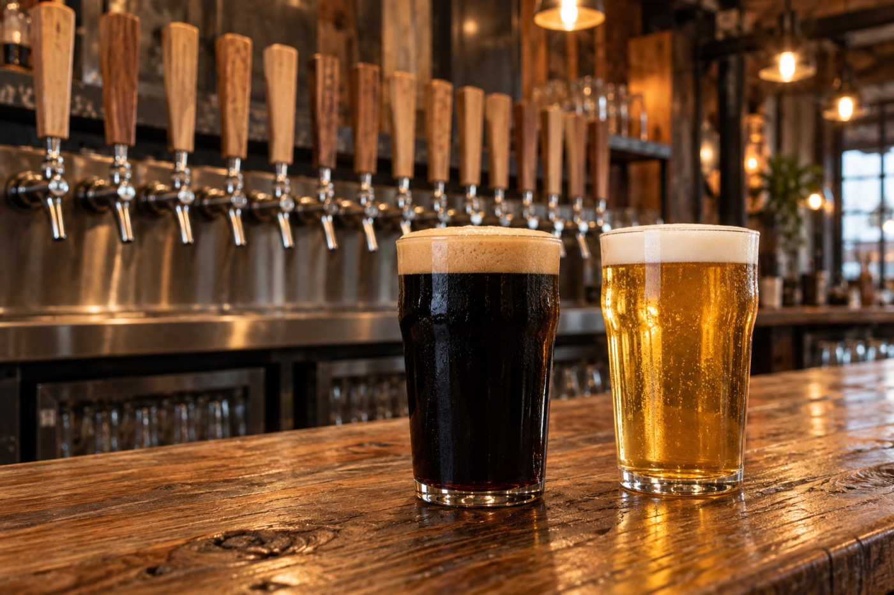

The horse of the West, the dragon of the East
Horse & Dragon was founded by Tim and Carol Cochran. Carol grew up in Colorado, Tim in Oregon, and they met at school in Northern California, where they fell in love with the taste of craft beer in 1987 at the Tied House in Mountain View.
Ten years in Asia (the dragon), ten years in Milwaukee and two more in Colombia followed before they started planning a brewery in January 2013. We opened to the public in May 2014 and celebrate our anniversary every May 1.
It is still a family business: daughter Tatum runs the tasting room and production schedule as general manager, and daughter Trina handles the graphic design and the books. Our four principles are simple: make great beer, treat everyone ethically, reduce our environmental impact, and be proactive members of our community.
- Opened
- May 2014
- Founders
- Tim & Carol Cochran
- Malt
- Craft Malt Certified, local Root Shoot & Troubadour
- Recognition
- AFP Colorado's Outstanding Small Business (2022)
- Watershed
- Inaugural Partner for the Poudre award (2022)
- Giving
- $1 from every Fire Captain Irish Red to local fire departments
